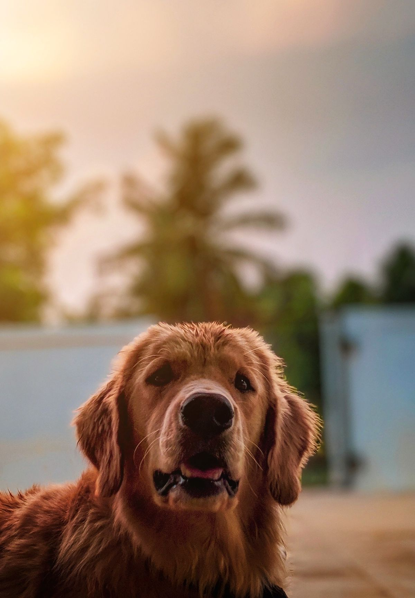
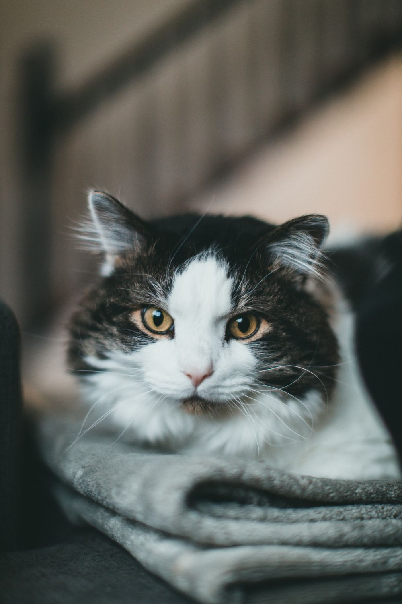

Alimentação & rotina
Comida, água fresca e atenção aos horários e às porções que você orientar.
CUIDADOS PARA PETS EM GUARULHOS · SP
Cuidados para cães e gatos em Guarulhos. Alimentação, brincadeiras e companhia enquanto você está fora.
Conversar no WhatsApp Conheça os cuidados
NO DIA A DIA
Você conta como é a rotina dele.
A Lidy combina os cuidados com você.
Comida, água fresca e atenção aos horários e às porções que você orientar.
Cuidados de higiene do dia a dia, combinados conforme as necessidades do seu animal.
Brincar, fazer companhia e respeitar a hora de descansar. Cada pet tem seu ritmo.

SOBRE O CUIDADO
Tem pet que adora brincar. Outros preferem companhia tranquila. A Lidy respeita esse jeito de ser, sem apressar a aproximação.
Antes de combinar o atendimento, conte sobre a rotina, os hábitos e o que ele precisa. O cuidado começa por entender cada animal.
Vamos falar sobre o seu petVAMOS CONVERSAR?
Mande uma mensagem para consultar a disponibilidade e combinar os detalhes.
Falar com a Lidy